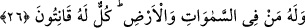
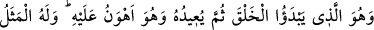
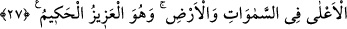
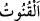

Allah ona: “Ben senin dilinim, gözünüm;
Ben senin duyguların, rızân, öfkenim” demiş.
26. Göklerde ve yerde olanlar hep O’nundur. Hepsi O’na boyun eğmiştir.
“Göklerde” olan melekler “ve yerde olanlar” insanlar ve cinler yaratma, sâhip olma
ve tasarruf bakımından “hep O’nundur.” sâdece Allâh’a âiddir. Bu hususta başkasının
hiçbir yönden ortaklığı yoktur. “Hepsi” yâni göklerde ve yerde bulunanların hepsi
“O’na” Allah Teâlâ’ya “boyun eğmiştir.”
“ itâat etmek, demektir. Burada kasdedilen ise ibâdetle ilgili itâat değil iradeyle
ilgili itâattir. Yâni onlar Allâh’ın onlar hakkında dilediği hayat, ölüm, diriltme, sağlık,
hastalık, aziz olmak, zelil olmak, zenginlik, fakirlik ve Allâh’ın diğer işlerinden
hiçbirinde Allah Teâlâ’ya karşı gelmezler. Yâni dik başlılık etmezler. Onlar her
durumda O’nun hükmü altında boyun eğmişlerdir.
Burada rûhâniyet semâsında olan erbâb-ı kulûba ve beşeriyyet arzında bulunan nefis
sâhiplerine işâret vardır. Birinci topluluk ve lütuf sıfatlarının mazharı, ikinci fırka kahr
sıfatlarının mazharı olmak sûretiyle hepsi O’na boyun eğmiştir. İşte bu yüzden onları
yaratmıştır.
27. Yaratmaya başlayan, sonra onu tekrarlayan O’dur, ki bu, O’nun için pek
kolaydır. Göklerde ve yerde (tecelli eden) en yüce sıfat O’nundur. O, mutlak güç
ve hikmet sâhibidir.
“Yaratmaya başlayan,” yâni mahlukâtı dünyâda ilk olarak yaratan O’dur. O, Âdem ve
Havvâ’yı yaratan ve ikisinden birçok erkekler ve kadınlar üretip yayandır. Sonra
ecelleri tamam olduğunda onları öldürendir. “Sonra onu tekrarlayan O’dur,” yâni
âhirette İsrafil’in sûra üflemesiyle onları tekrar yaratır ve daha önce olduğu gibi
diriltendir. “Ki bu,” yeniden yaratma, ey insanlar, sizin güçlerinize izâfetle ve
asıllarınıza kıyasla “O’nun için” ilk olarak yaratmaktan “pek kolaydır.” Yoksa onların
her ikisi de Allah için eşittir. “Bir şey yaratmak istediği zaman Onun yaptığı “Ol”
demekten ibarettir. Hemen oluverir.” (Yâsin, 36/82) İster önceden bir madde olsun
veya olmasın fark etmez. Yâni insanlar nezdinde bir şeyi ilk olarak yaratmak tekrar
yaratmaktan daha zor, tekrar yaratmak ilk olarak yaratmaktan daha kolaydır. Şu halde